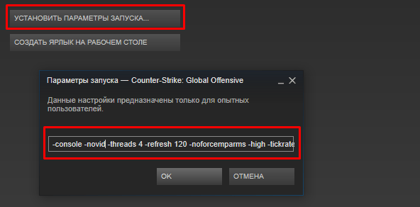
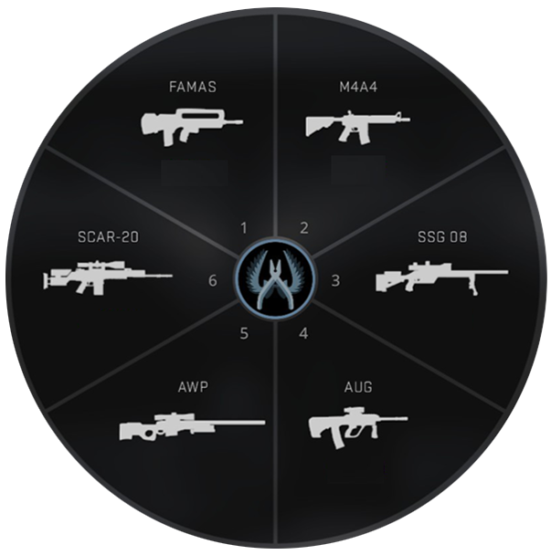
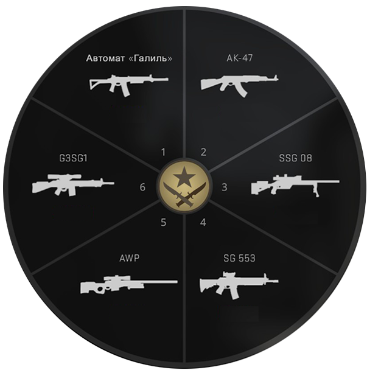
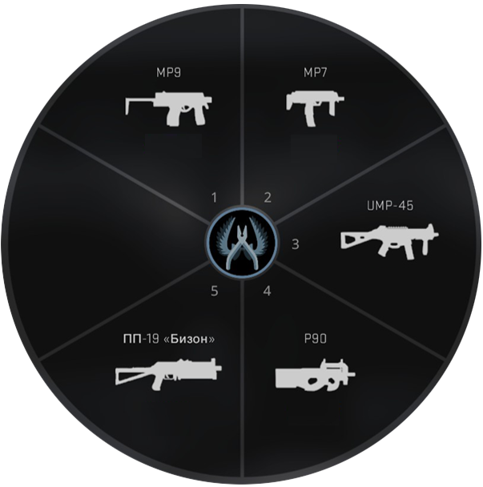
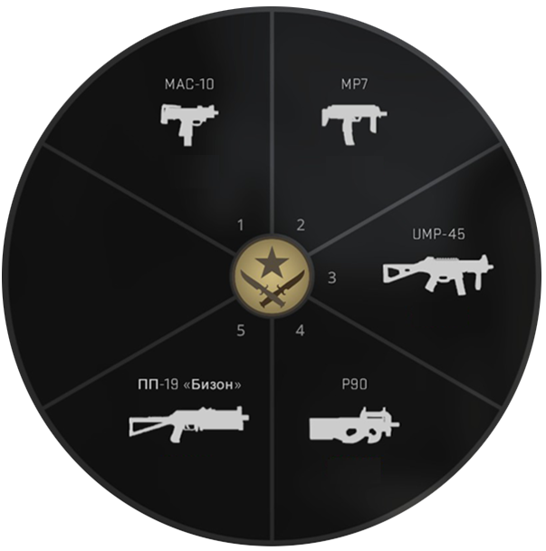
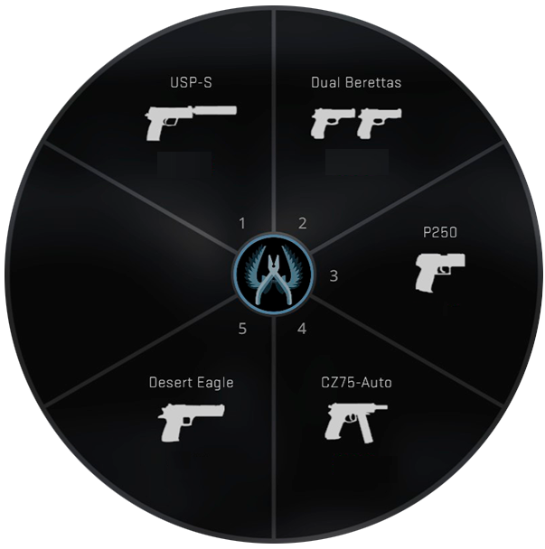
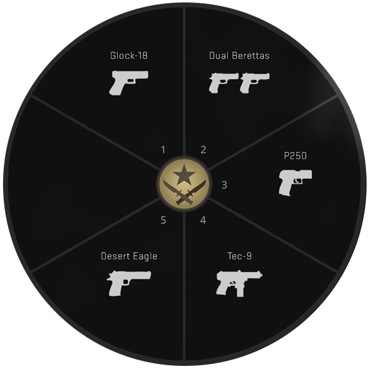
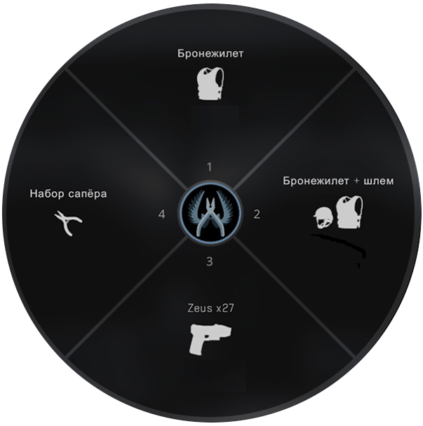
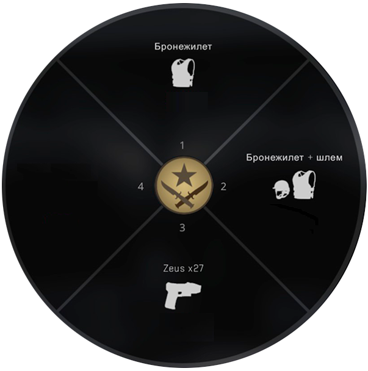

Консольные команды CS:GO
20.09.2021

В данной статье мы разберем все консольные команды для CS:GO. Мы постарались не упустить ни одной важной команды, которая могла бы Вам пригодится.
Всем известно, что консоль в CS:GO имеет большую роль в игре. Мы не знаем не одной игры, где настолько подробно необходимо знать описание команд. Пожалуй, знать все команды в кс го в консоли вовсе и не обязательно. При этом большое количество команд обязательно необходимо прописывать перед матчем. Вернее можно и не прописывать, а сохранить в свой cfg и постоянно использовать его. Но большинство игроков все же переоценивают консоль в CS:GO и слишком сильно зацикливаются на командах, да и в общем над cfg. Консольные команды - это хороший инструмент для организации комфортной игры. Если только это не чит команды для кс го (каким, например, можно считать r drawothermodels 2). Поэтому держите, друзья, подробный список. Среди них есть реально полезные команды для кс го в консоли, в том числе команды для тренировки в кс го. Пользуйтесь на здоровье :)
Включение консоли
Для того, чтобы можно было использовать консольные команды, необходимо включить возможность открытия консоли. Для этого необходимо в параметрах игры прописать команду "-console" или в настройках самой игры есть функция "Включить консоль разработчиков". Консоль открывается нажатием на клавиатуре кнопкой "Тильда" (Ё).

После этого вам станут доступны все консольные команды в кс го.
Выдать себе оружие через консольную команду
Не забываем, что данные команды работают только при включенном чит режиме на сервере sv_cheats 1.

Винтовки CT
- ㊉ give weapon_m4a1 - выдать M4A4 (без глушителя)
- ㊉ give weapon_m4a1_silencer - выдать M4A1 (с глушителем)
- ㊉ give weapon_famas - выдать FAMAS
- ㊉ give weapon_aug - выдать AUG
- ㊉ give weapon_scar20 - выдать SCAR-20
- ㊉ give weapon_awp - выдать AWP
- ㊉ give weapon_ssg08 - выдать SSG-08

Винтовки T
- ㊉ give weapon_ak47 - выдать AK 47
- ㊉ give weapon_galilar - выдать Galil AR
- ㊉ give weapon_sg556 - выдать SG556
- ㊉ give weapon_g3sg1 - выдать G3SG1
- ㊉ give weapon_awp - выдать AWP
- ㊉ give weapon_ssg08 - выдать SSG-08

Пистолет-пулемет CT и T
- ㊉ give weapon_mp9 - выдать MP9
- ㊉ give weapon_mp7 - выдать MP7
- ㊉ give weapon_ump45 - выдать UMP-45
- ㊉ give weapon_p90 - выдать P90
- ㊉ give weapon_bizon - выдать ПП-19 Бизон
- ㊉ give weapon_mac10 - выдать MAC-10


Пистолеты CT и T
- ㊉ give weapon_usp_silencer - выдать USP-S
- ㊉ give weapon_hkp2000 - выдать P2000
- ㊉ give weapon_glock - выдать Glock
- ㊉ give weapon_elite - выдать Dual Berettas
- ㊉ give weapon_p250 - выдать P250
- ㊉ give weapon_fiveseven - выдать Five Seven
- ㊉ give weapon_cz75a - выдать CZ75-Auto
- ㊉ give weapon_tec9 - выдать Tec-9
- ㊉ give weapon_revolver - выдать Revolver R8
- ㊉ give weapon_deagle - выдать Desert Eagle


Тяжелое CT и T
- ㊉ give weapon_nova - выдать Nova
- ㊉ give weapon_xm1014 - выдать XM1014
- ㊉ give weapon_mag7 - выдать MAG-7
- ㊉ give weapon_sawedoff - выдать Sawed-Off
- ㊉ give weapon_m249 - выдать M249
- ㊉ give weapon_negev - выдать Negev
